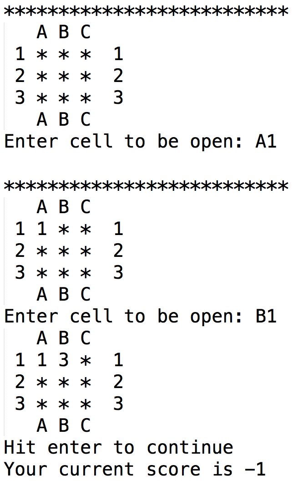

In this game, a (rows x cols) rectangular grid is filled with random numbers such that each integer from 1 to (rows * cols)/2 occurs exactly twice. If (rows * cols) is an odd number, then use the integers from 1 to floor((rows*cols)/2) and let the remaining card be empty. So for example, if I have rows = 3 and cols = 5, then I would use the numbers 1-7 twice each (which would give a total of 14 cards) and just have one additional card in the board which is empty (for a total of 3 * 5 = 15 cards).
The numbers in the board are originally hidden. On each turn, the player uncovers two numbers by specifying a row and a column for the cards they wish to uncover. If the numbers in these cards match, they are unhidden (so the player can see them). Play ends when all the numbers are unhidden. The score depends on the number of incorrect guesses, with the player incurring -1 pt for incorrect guesses and 5 pt for correct guesses. At the end of each turn, the score is displayed to the user.
With this in mind, write the function playMemoryGame(rows, cols) that implements this game as described. Follow this spec when you can, but there are also a lot of decisions left up to you. For example, when asking the user for the two cards they wish to uncover, you can ask the user to input the two choices at once separating them with a comma,or you could prompt the user twice, so they can input each row-col location for the card separately.
In any case, make your game playable, though we understand that console-based games have their limitations. Also, include a ‘help’ command that explains how to enter commands. Note: we will only test this up to 26x26 grids (so you don't have to deal with column AA...).
Below are two screenshots of a Memory Game we implemented to give you more of an idea of how this game should look.Unsuccessful run (the two cards uncovered do not match):

Successful run (the two cards uncovered match), after the unsuccessful run above: